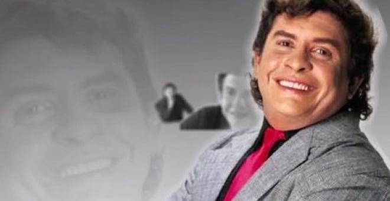

(Magangué, Bolívar, 23 de mayo de 1946 - Medellín, Antioquia, 24 de octubre de 2007)
Marco Tulio Aicardi Rivera
"El símbolo musical de fin de año."
Biografia
Tulio Aicardi Riveramás conocido por su nombre artístico Aicardi, fue un cantautor y compositor colombiano de música tropical años 1960 y años 2000.
Realizó su primer debut acompañando su armoniosa voz en las canciones tropicales y románticas con el grupo Sexteto Miramar, cuya canción bolero-balada "Que quiere esa música esta noche", "Una lágrima por tu amor", "Desde la ventana de mi apartamento", entre otros temas populares en Colombia por el cual adoptó el nombre artístico de "Rodolfo" que fue apoyado por Discos Fuentes en 1967, lanzando su primer disco como solista con el Miramar en 1969 titulado "Rodolfo y el sexteto Miramar" Aunque su primera grabación fue con el sello Sonolux hacia 1966 y como cantante del Club del Clan. Este tema, balada, poco conocido, se llama "bellos recuerdo
En 1968 era ya un baladista popular con LP de Discos Fuentes como "El Triunfador", o "El de siempre".
Poco tiempo después, se lanza al estrellato ahora con los ritmos tropicales, ingresando al grupo "Los Hispanos" cuya voz líder fue "el loco" Gustavo Quintero a quien sustituye, Quintero se retira para formar el grupo de "Los Graduados" grabando con la disquera rival de Discos Fuentes, la Compañía Colombiana de Discos (Codiscos).
Expansión en el extranjero
Discos Fuentes, a través de diversos convenios, comienza la difusión de su material de manera más extendida, alcanzando todo el continente prácticamente, y mediante exportación a Europa y Asia, aunque su mayor éxito lo obtuvo en el mundo de habla hispana.
Realizó grandes giras, promovido por Discos Fuentes visitando a México, Estados Unidos, toda Centroamérica, Sudamérica y parte de Europa.
Grupos musicales
Debido a su versatilidad incursiona en muchos géneros musicales tanto tropicales como románticos y todas sus variantes como por ejemplo la ranchera mexicana y las zambas argentinas, por lo que ingresa a los siguientes grupos en diferentes épocas.
- Los Hispanos (1969-1971),(1980-1992) >con cumbia y baladas.
- Los ídolos. ( 1971-1972)
- Los líricos con Tropicales y Baladas
- Los bestiales (1972-1973) con cumbia
- Grupo Monteadentro(1982) con varios ritmos tropicales.
- La Sonora Dinamita como artista invitado a mediados de los años 1980.
Formó también su propia agrupación La Típica RA7 (1974-2007) en la que mayoritariamente sus ritmos eran cumbias, con la cual llegó a México y fue la más conocida, con ésta, grabó un gran número de cóvers de temas de la llamada cumbia peruana grabadas originalmente por agrupaciones como Orquesta de Manuel Mantilla, El Combo Palacio, Orquesta de Ray Cuestas, Combo Los Nativos, Pintura Roja alcanzando notoriedad con temas como "Que no quede huella", "Chica Bonita", "Colegiala", "Besos de Fuego" y la "Cumbia de la Vanidad", entre muchos otros, gracias a la interpretación particular y arreglos en muchos casos, que se le hacían a los temas. Después se evolucionó a la orquesta "El concierto Hispano", con la cual terminó su vida artística.